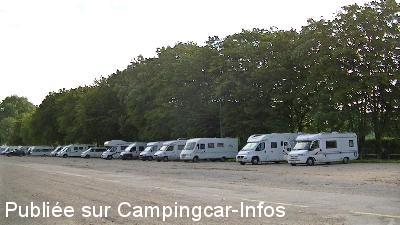
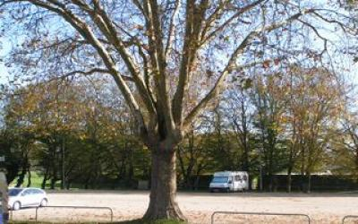

APN = Parking toléré jour/nuit de :
DOLE
(N° 567)
Accès/adresse :
Avenue de Lahr
39100 DOLE
39100 DOLE
Latitude : (Nord) 47.08974° Décimaux ou 47° 5′ 23′′
Longitude : (Est) 5.49658° Décimaux ou 5° 29′ 47′′
Tarif : Gratuit
Services :

Autres informations :
http://www.tourisme-paysdedole.fr/

Le 25/08/2014 par cesar31

Le 13/11/2012 par moo
de
cesar 31
le 25/08/2014 :
De passage en aout du monde mais beaucoup de place proche de la veille ville de l'office du tourisme merci a la ville de Dole
De passage en aout du monde mais beaucoup de place proche de la veille ville de l'office du tourisme merci a la ville de Dole
de
Dan & véro
le 19/08/2014 :
Aire très calme et accueillante. A proximité de la ville et tous commerces. Le W.E. du 15/08 nous étions 55 cc. La commune devrait réfléchir à la création d'une aire de services intéressante pour les commerces à proximité (boulangerie, pizzeria, supermarché). Merci tout de même à la municipalité de nous accueillir sur un parking proche du centre ville.
Aire très calme et accueillante. A proximité de la ville et tous commerces. Le W.E. du 15/08 nous étions 55 cc. La commune devrait réfléchir à la création d'une aire de services intéressante pour les commerces à proximité (boulangerie, pizzeria, supermarché). Merci tout de même à la municipalité de nous accueillir sur un parking proche du centre ville.
de
Marc
le 06/08/2014 :
Bonjour.
De passage fin juillet 2014. Aire toujours accueillante. Si possible choisir un stationnement dans le fond, près de la passerelle, derrière terrain de sport afin de ne pas entendre la circulation.
Bonjour.
De passage fin juillet 2014. Aire toujours accueillante. Si possible choisir un stationnement dans le fond, près de la passerelle, derrière terrain de sport afin de ne pas entendre la circulation.
de
Claude Lacroix
le 08/07/2012 :
Trois fréquentations déjà et toujours très satisfait de mon séjour par sa tranquillité et la proximité du Doubs ainsi que de l'ancienne ville tout à proximité, dommage que la ville ne mette pas une station de vidange et de remplissage sur cette vaste aire très fréquentée.
Claude Lacroix
Trois fréquentations déjà et toujours très satisfait de mon séjour par sa tranquillité et la proximité du Doubs ainsi que de l'ancienne ville tout à proximité, dommage que la ville ne mette pas une station de vidange et de remplissage sur cette vaste aire très fréquentée.
Claude Lacroix
de
DEN62
le 22/08/2011 :
De passage début août, le stationnement se fait non pas le long du canal , de l'autre coté de la route, c'est a dire sur le grand parking a coté du stade de rugby.
Pour la nuit allé plutôt au fond a gauche ( après les arbres ) face a la passerelle, le bruit de la circulation y est moindres.
Ne pas hésiter a visiter au moins le passage entre le café du moulins et la maison Pasteurs, le long du bras d'eau.
Navettes gratuite dans la villes
De passage début août, le stationnement se fait non pas le long du canal , de l'autre coté de la route, c'est a dire sur le grand parking a coté du stade de rugby.
Pour la nuit allé plutôt au fond a gauche ( après les arbres ) face a la passerelle, le bruit de la circulation y est moindres.
Ne pas hésiter a visiter au moins le passage entre le café du moulins et la maison Pasteurs, le long du bras d'eau.
Navettes gratuite dans la villes
de
Serge
le 30/06/2010 :
Attention : le parking avenue de Lahr a changé de coté, il est maintenant interdit coté canal (à gauche en arrivant des feux tricolores), mais il y a un panneau parking CC de l'autre coté, à droite, vers la commanderie direction du restaurant des Ecorces.
Venez visiter Dole et sa Collégiale, ville d'art et d'histoire. Un C/C Dolois
Attention : le parking avenue de Lahr a changé de coté, il est maintenant interdit coté canal (à gauche en arrivant des feux tricolores), mais il y a un panneau parking CC de l'autre coté, à droite, vers la commanderie direction du restaurant des Ecorces.
Venez visiter Dole et sa Collégiale, ville d'art et d'histoire. Un C/C Dolois
de
Michel THUET
le 20/04/2010 :
Nuit calme sur ce parking à proximité du centre ville avec ses petites ruelles sympathiques. Maison natale de Pasteur pas très loin.
Nuit calme sur ce parking à proximité du centre ville avec ses petites ruelles sympathiques. Maison natale de Pasteur pas très loin.
de
serge Touillez
le 26/11/2009 :
Bonjour. Pour le parking de Dole avenue de Lahr, ne venez pas pour Pâques ou la Pentecôte, les fêtes foraines sont installées à cet endroit et le camping est juste à coté, alors bonjour les nuits blanches. Mais il y a beaucoup à visiter ville d'art et d'histoire, Dole vous réserve une bonne journnée de visites des sites.
www.doledujura.fr
www.jura-tourisme.com
www.tourisme-paysdedole.fr
Bonjour. Pour le parking de Dole avenue de Lahr, ne venez pas pour Pâques ou la Pentecôte, les fêtes foraines sont installées à cet endroit et le camping est juste à coté, alors bonjour les nuits blanches. Mais il y a beaucoup à visiter ville d'art et d'histoire, Dole vous réserve une bonne journnée de visites des sites.
www.doledujura.fr
www.jura-tourisme.com
www.tourisme-paysdedole.fr
de
Bouvier
le 01/08/2009 :
Parking tranquille pour dormir, ombragé, à deux pas du centre ville. Près du camping au port de plaisance du canal. Possibilité de vidange au camping municipal à coté.
Parking tranquille pour dormir, ombragé, à deux pas du centre ville. Près du camping au port de plaisance du canal. Possibilité de vidange au camping municipal à coté.